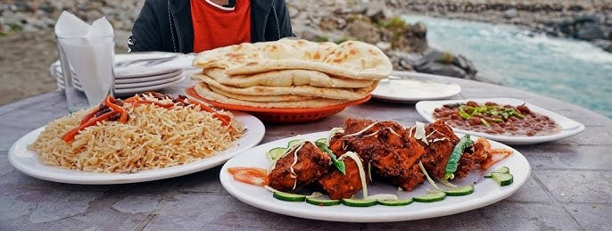

Explore Our Latest Posts
Exploring Hidden Gems of Pakistan: Complete Guide
When most people think of traveling to Pakistan, they often imagine the bustling streets of Lahore, the historic ruins of Mohenjo-daro, or the towering peaks of the Karakoram Range. While these are indeed must-see destinations, Pakistan has much more to offer, especially for those willing to venture off the beaten path. This guide is dedicated to uncovering the hidden gems of Pakistan—places where you can experience the country's true essence away from the crowds.
.jpg)
1. Must-See Attractions
Hunza Valley
Nestled in the Gilgit-Baltistan region, Hunza Valley is a paradise on earth. Surrounded by towering snow-capped peaks, the valley is home to ancient forts, crystal-clear rivers, and terraced fields.
- Baltit and Altit Forts: These centuries-old forts offer stunning views and a glimpse into the region's rich history. The Baltit Fort, perched atop a hill, is particularly famous for its unique architecture and panoramic views.
- Passu Cones: These jagged peaks, also known as "Passu Cathedral," are a photographer's dream. The surreal landscape is perfect for a peaceful trek or a serene picnic.
- Best Time to Visit: Spring and autumn are ideal, offering pleasant weather and vibrant landscapes.

Kalash Valleys
Located in the Chitral District, the Kalash Valleys are home to the unique Kalash people, known for their distinct culture, language, and traditions.
- Bumburet Valley: The largest and most accessible of the Kalash Valleys, Bumburet is known for its lush greenery and traditional wooden houses.
- Rumbur Valley: This quieter valley offers a more authentic experience, with fewer tourists and more opportunities to interact with the Kalash people.
- Festivals: Don't miss the colorful Kalash festivals, such as Chilam Joshi in May and Uchau in August, where locals celebrate with traditional dances and songs.

2. Local Culture
Skardu
Skardu, the gateway to the mighty Karakorams, is not just about breathtaking landscapes but also rich cultural experiences.
- Polo Matches: Known as the "Game of Kings," polo in Skardu is a must-see. The Shandur Polo Festival, held every summer, attracts players and spectators from around the world.
- Local Crafts: Skardu is famous for its hand-woven rugs, pattu cloth, and wooden carvings. Visit local markets to pick up these unique souvenirs.
- Traditional Dress: The locals here proudly wear their traditional attire, especially during festivals. The men wear woolen caps called "Pakol," while the women adorn themselves with colorful shawls and jewelry.

Tharparkar
The desert region of Tharparkar in Sindh is a cultural treasure trove, with a blend of Hindu and Muslim traditions.
- Marvi's Well: This historic site is tied to the legend of Marvi, a local heroine celebrated in Sindhi folklore. The well is a symbol of love and resilience.
- Temples of Nagarparkar: The ancient Jain temples of Nagarparkar are architectural marvels, showcasing intricate carvings and a rich history dating back centuries.
- Desert Festivals: Experience the vibrant desert culture through traditional music, dance, and camel races during the annual Thar Desert Festival.

3. Food Recommendations
Swat Valley
Swat, often referred to as the "Switzerland of Pakistan," is not only known for its natural beauty but also its delectable cuisine.
- Chapli Kebab: A must-try dish in Swat, these spicy minced meat patties are best enjoyed fresh off the grill with naan and chutney.
- Trout Fish: Swat's rivers are famous for their trout, which is often served grilled or fried with local herbs and spices.
- Honey: The valley produces some of the finest honey in Pakistan. Make sure to visit a local beekeeper to taste this natural delight.

Multan
Known as the "City of Saints," Multan also boasts a rich culinary heritage.
- Sohan Halwa: This traditional sweet made from flour, sugar, ghee, and nuts is a specialty of Multan. It's a popular gift item for travelers.
- Multani Mangoes: The city is famous for its mangoes, especially the Anwar Ratol and Chaunsa varieties, which are considered some of the best in the world.
- Saraiki Cuisine: Multan offers a unique blend of Saraiki dishes, including spicy Karahis and Biryani, distinct from those found in other regions of Pakistan.

4. Travel Tips
Transportation
- By Air: Pakistan International Airlines (PIA) and other local carriers offer flights to major destinations like Skardu, Chitral, and Multan. For more remote areas, consider chartered flights or local buses.
- By Road: Renting a car is an excellent way to explore the countryside. Roads can be challenging, especially in mountainous regions, so ensure your vehicle is equipped for the journey.
- Local Transport: In cities, rickshaws and taxis are convenient. In rural areas, jeeps are often the best option for navigating rugged terrain.
Accommodation
- Luxury Hotels: Cities like Islamabad, Lahore, and Karachi offer a range of luxury hotels. In tourist hotspots like Hunza and Skardu, you’ll find charming resorts with breathtaking views.
- Guesthouses: For a more authentic experience, consider staying at local guesthouses. These are often run by families who can offer insider tips on exploring the area.
- Camping: In places like Deosai Plains and Fairy Meadows, camping is a popular option, allowing you to immerse yourself fully in nature.
Safety Tips
- Cultural Sensitivity: Pakistan is a conservative country, so dress modestly, especially in rural areas. Women should consider wearing a headscarf when visiting religious sites.
- Health Precautions: Make sure to carry any necessary medications and stay hydrated, especially when traveling in hot regions like Tharparkar.
- Travel Advisories: Always check travel advisories before visiting remote areas, and consider hiring a local guide for added security.
5. Insider Tips
Neelum Valley
Often overshadowed by more popular destinations, Neelum Valley in Azad Kashmir is a hidden gem worth exploring.
- Keran: This serene village offers stunning views of the Neelum River and the Indian-administered side of Kashmir. It's an excellent spot for bird watching and photography.
- Arang Kel: A small village accessible by a challenging trek or a thrilling cable car ride. The journey is worth it for the breathtaking views and the chance to experience traditional Kashmiri life.
- Stay with Locals: Many families in Neelum Valley open their homes to travelers. Staying with them offers a unique opportunity to learn about their way of life and enjoy home-cooked meals.

Hingol National Park
Located in Balochistan, Hingol National Park is one of Pakistan’s largest and most diverse national parks.
- Princess of Hope: This natural rock formation, sculpted by the wind, resembles a woman looking out towards the horizon. It's a popular stop for those traveling the Makran Coastal Highway.
- Hingol Mud Volcanoes: One of the few places in the world where you can see active mud volcanoes. It's a surreal and otherworldly experience.
- Hinglaj Mata Temple: An important pilgrimage site for Hindus, this temple is nestled in the middle of the park and is surrounded by stunning landscapes.

Your Next Adventure Awaits
Conclusion
Pakistan is a country of incredible diversity, with each region offering something unique and memorable. Whether you’re a history buff, a foodie, or an adventure seeker, the hidden gems of Pakistan have something for everyone. So pack your bags, grab your camera, and get ready to explore the unexplored!
Book your adventure today and discover the hidden beauty of Pakistan with our expert guides. Contact us for more travel tips and personalized tour packages.